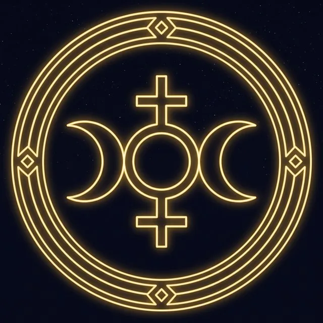

Энергия
Глубокая перестройка, анализ, очищение, распад и новое собирание целого.
Характер энергии
Внимательность к деталям, способность видеть скрытые связи и менять внутреннюю структуру.
Влияние на жизнь
В некоторых эзотерических школах Прозерпина связывается с длительной алхимической трансформацией, служением, восстановлением после кризиса и переходом на новый уровень целостности.
В ресурсе
Проницательность, регенерация, точность, способность преобразовывать системы.
В тени
Чрезмерная критичность, навязчивый анализ, холодность, разрушение ради «очищения».
Формула
«Я очищаю и пересобираю».
Описание носит символический характер и не является научным объяснением личности или судьбы. Проявление планеты в реальной карте зависит от знака, дома и аспектов.